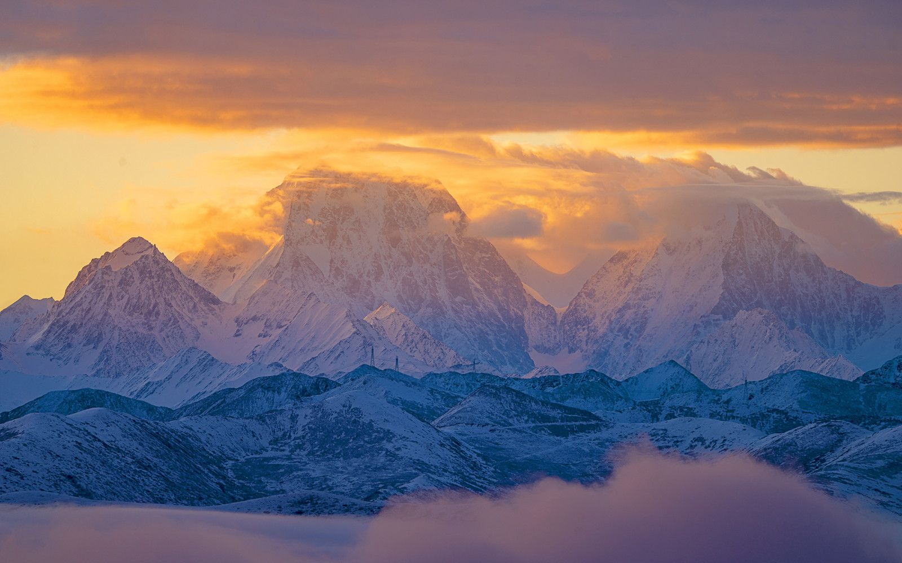
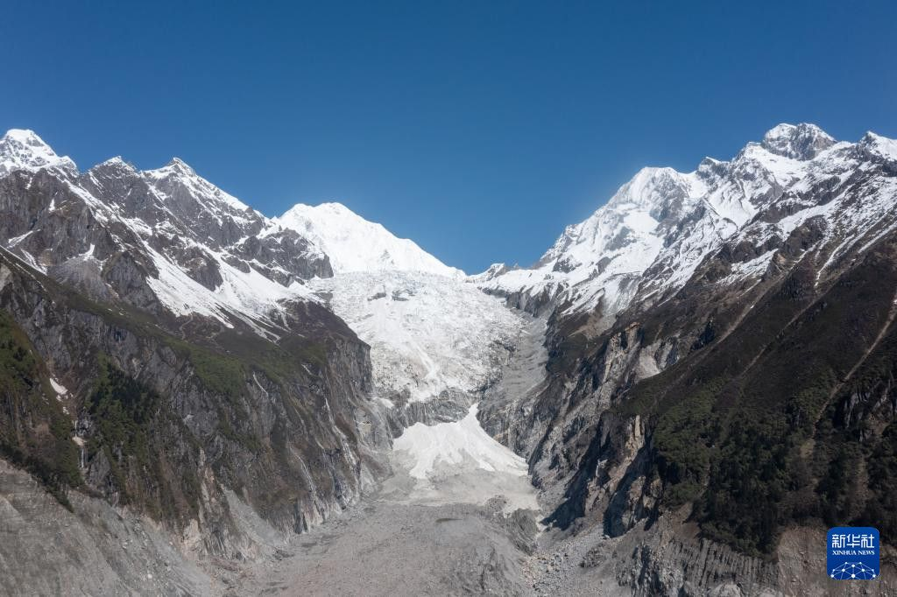

01 · 推荐
九寨沟
冰瀑、蓝冰，五彩池冬季通常不结冰。坐动车去，住沟口，慢慢进沟。

Winter Journey
玉龙雪山 · 海螺沟 · 九寨沟
把舒服、花费和风景放在一起看，又不想特种兵赶路。
诺日朗冰瀑航拍 · 2024-01-04
新华社记者 王曦 · 新华网
一句话结论
把舒服、花费和风景放在一起看，又不想特种兵赶路，九寨沟更合适：成都东坐动车到黄龙九寨站，再换直通车去沟口，当天休息，第二天按淡季 8:30 以后从容进沟，第三天再走。1 月能看冰瀑、蓝冰，五彩池冬季通常不结冰，海子仍有颜色。黄龙冬天通常不闭园，但三天里不必硬塞进去。飞丽江换乘最少，可是费用更高，山顶雪还可能偏少。海螺沟更省，可冬天要走冰雪路，舒服程度明显差些。
大家常说的「川西」其实很宽。九寨沟在阿坝州，更准确是川西北，和海螺沟（贡嘎、磨西）不是一条线。
主观估计
分数是根据已查资料做的主观估计，1 分最低、5 分最高，不是官方数据。舒适度看：从成都怎么走、要不要赶早、换乘多少、海拔、寒冷、排队和走路量。
逐项看差别
| 项目 | 丽江玉龙雪山 | 川西海螺沟 | 九寨沟 |
|---|---|---|---|
| 交通 | 飞机直达 | 自驾高速，看当天路况 | 动车 + 直通车；不建议冬季自驾 |
| 天气 / 风景 | 旱季晴多，风大 | 可能日照金山，也可能云雾 | 冰瀑蓝冰；部分海子冬季仍有颜色 |
| 雪量 | 可能偏少，像石头山 | 冰川常年可见 | 靠冰瀑和积雪，不是厚厚的山顶积雪 |
| 封路风险 | 低 | 中 | 坐动车低；自驾中 |
| 高反 | 4506 米，当天下山 | 睡 1580 米，白天上 3600 米 | 睡约 2000 米，白天最高 3101 米 |
| 舒适度 | 换乘少，但要上高海拔索道 | 冬天开车更累 | 要换乘，但不用自己走冰路，可不赶凌晨 |
| 5 人 3 天费用 | 约 7650-12300 元（含住宿） | 约 4775-8475 元（含住宿） | 交通+门票已核约 2740 元，不含住宿餐饮 |
分开看细节
01 · 推荐
冰瀑、蓝冰，五彩池冬季通常不结冰。坐动车去，住沟口，慢慢进沟。

02
飞机直达，换乘最少。1 月晴天多，但大风可能停运，山顶雪还可能偏少。
03
贡嘎和冰川更壮观，也更省。冬天要走冰雪路，舒服程度明显差些。
前三张是贡嘎日照金山，来自视觉中国/央视网，未确认摄于海螺沟景区内。第四张是新华社拍摄的贡嘎冰川航拍。


怎么提高成功率
丽江：不必 4 点起床。尽量订偏早但不至于摸黑的索道场次，前一晚和当天早上看官方通告，回程机票买可改签的。
海螺沟：只走雅康和泸石高速，白天短途开车，不夜赶路，带防滑链，出发当天查四川高速和甘孜交警微博。
今冬九黄机场仅见每周六往返成都一班，三天行程更稳的是坐动车。
核对过的链接